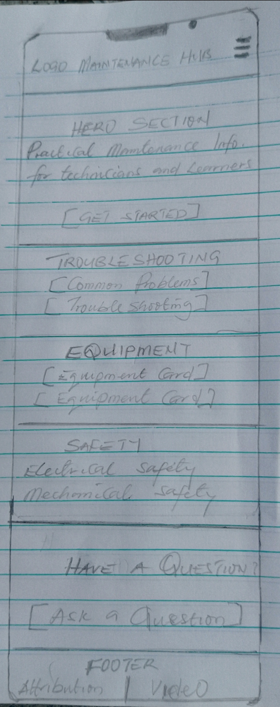
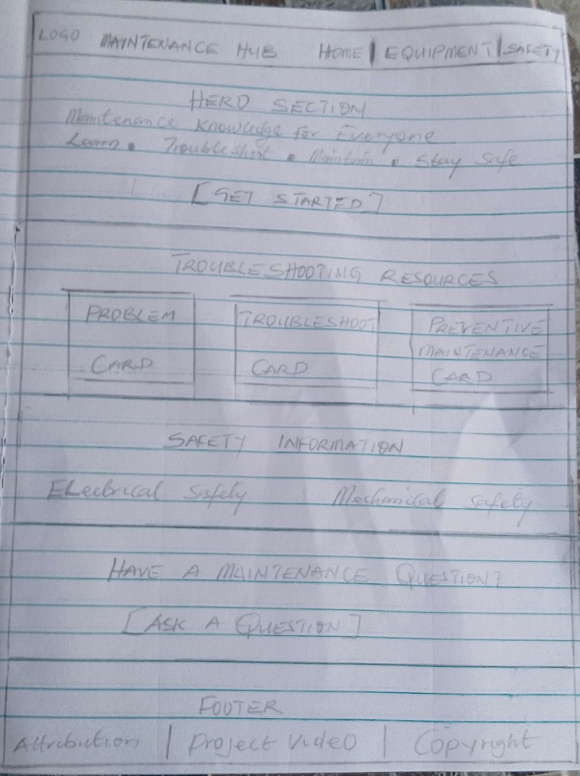

#12304A
Dark navy will be used for the header, navigation, major headings, footer, and important interface elements.
WDD 231: Web Frontend Development
Individual Website Project Site Plan
The name "Maintenance Hub" was selected because it clearly communicates that the website will provide a central resource for maintenance information, troubleshooting guidance, equipment knowledge, preventive maintenance, and safety practices.
Maintenance Hub will provide a practical online resource for maintenance technicians, machine operators, engineering students, and other learners interested in equipment maintenance.
The website will provide information about common equipment problems, troubleshooting procedures, preventive maintenance, maintenance tools, and workplace safety practices.
The following scenarios represent questions that members of the target audience may ask when visiting the website:
The website will use a professional industrial color scheme. Dark navy will provide the main visual structure, while safety orange will provide emphasis and visual accents. Light colors will keep the content readable and easy to scan.
Dark navy will be used for the header, navigation, major headings, footer, and important interface elements.
Safety orange will be used for buttons, highlights, accents, important links, and maintenance-related visual indicators.
Light gray will be used as the primary background color for the website.
Dark gray will be used for body text and general written content.
White will be used for content cards, forms, and text placed on dark backgrounds.
Roboto will be the primary font used throughout the website. Bold Roboto will be used for headings, navigation labels, and important interface elements. Regular Roboto will be used for paragraphs, labels, descriptions, and general content.
Maintenance Hub provides practical information for equipment maintenance and troubleshooting.
The home page will use a responsive layout that changes according to the size of the visitor's screen. The mobile layout will organize content in a single column, while the larger-screen layout will use multiple columns where appropriate.

